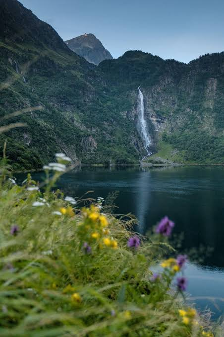

Lac
d'Oô


⟹ Le Miroir Glaciaire du Luchonnais ⟸
Connu jusqu'au XIXᵉ siècle sous le nom de « lac de Séculéjo », le lac d'Oô occupe depuis toujours une place à part dans l'imaginaire pyrénéen : niché dans la vallée d'Oô, ce lac d'origine glaciaire est aussi l'un des sites naturels les plus visités de Haute-Garonne, et son nom reste un classique des grilles de mots croisés.

Formé par le recul des glaciers à la fin de la dernière glaciation, le lac occupe une cuvette rocheuse dominée par des sommets dépassant 3 000 mètres, parmi lesquels le pic des Spijeoles et le Perdiguère. Sa renommée tient surtout à la cascade qui se déverse depuis le lac d'Espingo et plonge de près de 275 mètres directement dans ses eaux : une configuration rare, qui en fait l'une des plus hautes chutes d'eau de la chaîne pyrénéenne.
Dès la fin du XIXᵉ siècle, le site attire les premiers pyrénéistes et les curistes de Luchon, qui gagnent le lac à dos de mulet par l'ancien chemin muletier.
En 1921, un barrage de 12 mètres de haut et 66 mètres de long vient rehausser le niveau naturel du lac d'une dizaine de mètres, afin de produire de l'électricité et de réguler le débit de la Neste d'Oô. Une galerie souterraine de 11 kilomètres achemine aujourd'hui ses eaux vers la centrale hydroélectrique d'Oô, à Luchon, d'une puissance de 30 MW.
Devenu artificiel dans sa forme actuelle, le lac n'en demeure pas moins un site naturel exceptionnel, classé en zone Natura 2000, où se mêlent désormais production d'énergie, pastoralisme et tourisme de montagne.
Le refuge-auberge construit en rive gauche du barrage accueille depuis des décennies les randonneurs de passage, perpétuant une tradition d'accueil en montagne bien antérieure à l'aménagement hydroélectrique.
Le lac d'Oô s'inscrit derrière un verrou glaciaire typique des vallées pyrénéennes, sculpté par les glaciers quaternaires. Les parois qui l'enserrent, exposées à toutes les intempéries, témoignent de cette longue histoire géologique.
Le site abrite une faune emblématique de la haute montagne : isards évoluant sur les pentes rocheuses, marmottes qui sifflent à l'approche des randonneurs et, avec un peu de chance, le vol d'un gypaète barbu au-dessus des crêtes.
La flore, typique de l'étage subalpin, associe pelouses à nard et landes à rhododendrons, ponctuées de quelques pins à crochets sur les versants les mieux exposés.
Comptez environ 1h30 de marche aller-retour depuis les Granges d'Astau pour une simple visite du lac, ou une demi-journée complète (3 h environ) pour une boucle plus large incluant la cascade.
Le parking des Granges d'Astau, à une trentaine de minutes de Luchon en voiture, constitue le point de départ. En été, une navette relie également les Granges d'Astau au centre de Luchon pour limiter la circulation dans la vallée.
Le sentier, large et bien entretenu, reste accessible aux familles, moyennant de bonnes chaussures de marche : quelques passages restent soutenus malgré l'absence de difficulté technique majeure.
Sur-fréquentation estivale : plusieurs milliers de visiteurs empruntent le sentier chaque été, exerçant une pression croissante sur les milieux et la faune du site.
Érosion des sentiers : le piétinement hors des chemins balisés fragilise les pelouses d'altitude, dont la régénération est très lente.
Déchets et dérangement : pique-niques et déchets abandonnés perturbent la faune locale, en particulier lors des pics de fréquentation.
Gestion de l'eau : le barrage hydroélectrique impose une régulation du niveau du lac qui doit composer avec les enjeux écologiques du site.
Baignade interdite : la baignade n'est pas autorisée dans le lac d'Oô, afin de préserver la faune et la flore environnantes.
Affluence estivale : le site étant très fréquenté en été, mieux vaut partir tôt le matin pour profiter du calme, surtout entre 9h et 17h.
Zone protégée : le site fait partie du réseau Natura 2000, garant de la préservation de ses habitats naturels.
Prolongements possibles : les marcheurs expérimentés peuvent poursuivre jusqu'au refuge d'Espingo, gardé de mi-mai à mi-octobre, au sommet de la cascade (environ 1h30 de marche supplémentaire). Ce second lac, plus sauvage, est nettement moins fréquenté.
Meilleure période : de juin à octobre ; au printemps, le sentier reste souvent enneigé une bonne partie de la saison.
Photographie : depuis la rive, la cascade est particulièrement photogénique en fin de matinée, lorsque le soleil l'éclaire directement.
Le lac d'Oô se situe dans la vallée d'Oô, sur la commune d'Oô, à une trentaine de minutes de route de Bagnères-de-Luchon, en Haute-Garonne.
Depuis Luchon, prendre la route du col de Peyresourde (D618) puis la D76 en direction du village d'Oô, jusqu'au parking des Granges d'Astau.
Les Granges d'Astau, terminus de la route, constituent le point de départ obligé de la randonnée vers le lac.
Au-delà du lac, la vallée se poursuit vers le lac d'Espingo, le lac Saussat puis le lac du Portillon, à la frontière espagnole.